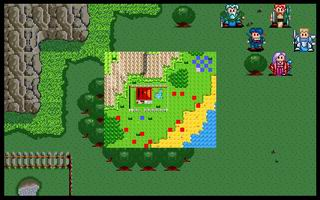

第八章 刺客

 雷特
雷特 米兰
米兰 克隆
克隆 艾利欧
艾利欧 巴拉多
巴拉多 洛加
洛加 希瓦那
希瓦那 卡里斯莱特
卡里斯莱特
LV10 战士 凯亚（NPC） （HP616,AP242,DP120,HIT95,EV15,MV4,巨剑,鳞甲,回复剂x2）
本关敌人：
LV10 沙达拉 （HP560,AP310,DP115,HIT130,EV25,MV4）
 LV8 护卫x2 （HP420,AP136,DP100,HIT114,EV24,MV4）
LV8 护卫x2 （HP420,AP136,DP100,HIT114,EV24,MV4）
LV6 精锐队步兵x6 （HP300,AP132,DP81,HIT102,EV12,MV4）
 LV5 弓箭手x4 （HP300,AP130,DP30,HIT105,EV15,MV4）
LV5 弓箭手x4 （HP300,AP130,DP30,HIT105,EV15,MV4）
胜利条件：敌人全灭
失败条件：雷特或凯亚死亡
战后加入：
LV10 战士 凯亚 （HP616,AP242,DP120,HIT95,EV15,MV4,巨剑,鳞甲,回复剂x2）
战后报酬：
$3600G/$10800G
攻略简要：
这关几乎可改名为战士团了，除了4只弓兵外，全是步兵，但是难度不低，因为敌方已经转为<精锐>队步兵(其实差不多)，攻击力已经提升到打一下不只1滴了，而且防御力相当高，一开始先将挡路的几只步兵和弓箭手挂掉，确保凯亚的逃生路线(他会往雷特得所在地逃)，比较难对付的是沙达拉和护卫，攻防都相当高，尤其是沙达拉，人滥剑不滥，必杀剑相当吓人，所以一定要靠烈击弹，最好此时雷特已经转王子，这样他也可以放烈击弹，两发大概就剩十位数了，沙达拉经验值相当多，至于要给谁就由玩家决定吧。
战后商店道具:
武器： |
防具： |
道具： |
剧情对话：
雷特:依照索尼克伯父的指示我们得先来这个地方找寻凯亚，让他加入我们。
克隆:凯亚原本是王国战士团的团长，据说在哈奇即位之后，因为不满他的所作所为而离开。哈奇曾经派兵到处搜捕他，没想到会在这个地方。
卡里斯:咦!前面好象有人在交谈!
凯亚:沙达拉，你带来这些杂兵就想要捉我回去?
沙达拉:哼!虽然我以往都是你的手下败将，但这次可不一样!看到这把剑没有?
凯亚:啊!是...必杀剑!看来哈奇真的想要之我于死地了...
沙达拉:哈奇大帝在知道你三番两次拒捕之后，极为愤怒，便赐我这把必杀剑，务必将你带回--生死不论!嘿嘿!你还不赶快求饶?
凯亚:等等!我告诉你一件事情!
沙达拉:有什么遗言就快说吧!还是...你想要乞饶了?
凯亚:老实说，必杀剑是很强没错，但是给你这个废物使用，也就形同废物了。哎!真是可惜呀!
沙达拉:他妈的!想死就成全你!
干掉了沙达拉所率领的精锐队步兵，救出了凯亚。
凯亚:多谢各位相助!请问你们是...
雷特:我乃罗特帝亚二王子雷特，他们多是我的好伙伴!
凯亚:原来是先王后裔!你们来到此地，是来找我的吗?
雷特:我们将前往格菲迪城讨伐叛贼哈奇，因为受到圣者指引，前来请你协助我们复国。
凯亚:我原本并不清楚哈奇篡位的实际真相，才会在他控制整个王国后继续留任在战士团中。后来我实在不满他的一些做法，才离开战士团。既然殿下对我有救命之恩，那自然是不敢推辞了。
雷特:多谢大哥相助，至于你刚才所提到的，有关哈奇篡位的实情，是否能再告诉我详细一点?
凯亚:哦!是这样的:当初哈奇起兵叛乱时，是藉称有魔族在侵攻王城，因此他必须率领军队回王城平定。由于一来哈奇表现的一向忠心，二来也的确有些魔族在王城内四处骚扰，所以一般的人民都相信了，他所说的话。
希瓦那:根据我父亲回忆，当时他率领着骑士团应付神出鬼没的魔族时，确实有点疲于奔命，因此哈奇率军入王城时，大家也都不疑有他。
凯亚:哈奇进入王城后不久，皇宫突然发生了大火。当火熄之后，哈奇立刻以重兵控制了整座王城，然后宣称先王及两位王子都已经丧生在火窟了，为了预防动乱，暂时由他代理执政。原本众人都半信半疑，但是时间一久，哈奇也就逐渐露出本性了。
克隆:事实上哈奇勾结了魔族，趁机起兵造反。由于忠于先王的将领事先都遭到暗杀，等到先王发现不对劲时，已经太迟了。
卡里斯:我在圣者那里时，他也曾提起这件事，要不是他正在闭关修练法术，以致无法分身的话，也许可以阻止这段惨剧的发生。
雷特:...唉!这或许是命中所注定吧!但是我既然身为人子，怎么可以不报杀父之仇呢?
克隆:殿下说的是。好了，大家动身吧!
第八章完